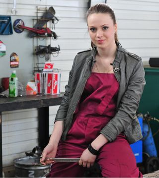
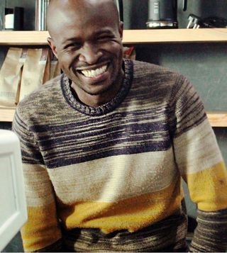
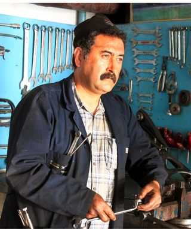

Elvis Bilservice grundades av Elvis Johansson, en passionerad bilentusiast med en kärlek för
klassiska fordon. Det började som en liten verkstad 2005, men Elvis unika känsla för detaljer
och skicklighet gjorde att ryktet snabbt spreds. Idag är verkstaden en av Sveriges mest
uppskattade adresser för restaurering av retrobilar, med kunder från både Sverige och utomlands.
Om Elvis
Elvis Johansson är grundaren och själen bakom verkstaden. Med över 20 års erfarenhet har han
gjort det till sin livsuppgift att förvandla klassiska fordon till mästerverk. Hans filosofi är
att varje bil har en historia, och hans arbete handlar om att bevara och förstärka den
historien.
Vårt team
Johan Lindström
Expert på motorrestaurering
Johan har över 15 års erfarenhet av att restaurera motorer i klassiska bilar. Han är
känd för sin noggrannhet och förmåga att få även de mest slitna motorer att fungera
som nya. Johan: "En välrestaurerad motor är hjärtat i en klassiker."

Sofia Andersson
Inredning och detaljarbete
Sofia är teamets expert på bilinteriörer. Med 7 års erfarenhet av att sy om säten,
återskapa paneler och ta hand om små detaljer förvandlar hon varje bil till ett
unikt mästerverk. Hon är dessutom känd för att alltid hitta lösningar på svåra
utmaningar.

Erik Bergman
Expert på kaross & lackering
Erik har en bakgrund som bilbyggare och har arbetat med exklusiva karossar i över 12
år. Hans skarpa öga för detaljer och skicklighet inom lackering gör att varje bil
lämnar verkstaden som ett konstverk.

Lars Pettersson
Veteran på elektriska system
Lars har över 20 års erfarenhet av att arbeta med klassiska bilars elsystem. Hans
djupa kunskap och lugna arbetsstil gör att även de mest komplicerade elektriska
problemen får en smidig lösning. Lars ser till att alla bilar lämnar verkstaden
fullt funktionella och säkra.